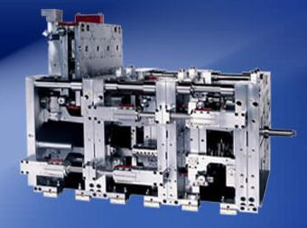
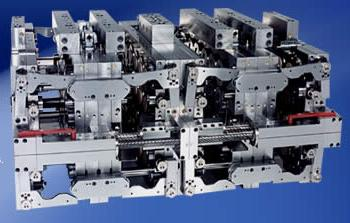
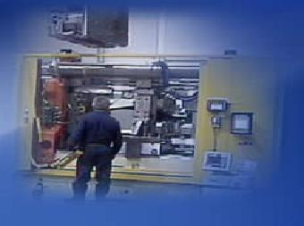

|
2.2. Üç yüzeyli Stack kalýplar
Üç yüzeyli stack kalýplar 2 yüzeyli stack kalýplarýn ihtiyacý karþýlamadýðý durumlarda ve 4 yüzeyli kalýplarýn da mevcut enjeksiyon makinesi için fazla yüksek olduðu durumlarda kullanýlýr. Üç kademeli stack kalýplar hem ince cidarlý hem de derin parçalarýn basýlmasýnda kullanýlabilir. Bu kalýplar çabuk deðiþtirilebilir sistemlerle bütünleþtirilirse esneklik ve yüksek üretim kapasitesi saðlar. Üç yüzeyli stack kalýplar özellikle derin parçalarýn basýlmasýna müsait olduðu için çok önemlidir. Diðer tip stack kalýplar daha çok ince cidarlý parçalar basabilmektedir. Fakat 3 yüzeyli bir stack kalýp daha derin parçalarý güvenli ve yüzey kalitesi yüksek bir þekilde basabilir. 3 yüzeyli stack kalýp kullandýðý StackTeck firmasý tarafýndan patentli 3'lü VMTS sistemi ile her bir kalýp gözlerine denk basýnç ve akýþ karakteristiði saðlar.

Þekil 4. Üç yüzeyli Stack Kalýp
Avantajlarý:
- Enjeksiyon makinesinin tonajýný arttýrmaya gerek yoktur.
- 300 veya daha yüksek tonajlý enjeksiyon makinelerinin mengene aralýðý standartlarýna uygun kalýp yüksekliðine sahiptir.
- Kalýp dizayný QPC (Quick Product Change) ile geliþtirilebilir.
- Strok artýþý çevrim zamanýný çok kýsa bir süre etkiler.
Uygulama alanlarý:
- Ýnce cidarlý kaplar
- Kapaklar
- Endüstriyel kapaklar
- Týbbi Kullan-At eþyalar
2.3. Dört yüzeyli stack kalýplar
Esasýnda 4 yüzeyli stack kalýplar 2 tane çift yüzeyli stack kalýbýn arka arkaya yerleþtirilmesi ile oluþur. Dört yüzeyli stack kalýp sistemi 2 ana bileþenden ibarettir. Bunlar bir sýcak yolluk taþýyýcý kasa ve çekirdeði deðiþtirilebilir plaka modülleridir. Ýhtiyaç olan tüm su, hava, elektrik cihazlarý sabit kalmak suretiyle taþýyýcý kasa deðiþtirilir. Böylece tekrar montaj etmekle zaman kaybý yaþanmaz. Bilinen stack kalýplardaki meme çubuðu kalýplarýn çabuk deðiþtirilmesine engel teþkil eder. Kalýp makinedeyken diðer plaka ve modüllerin kaldýrýlmasýna ve güçlüklerin artmasýna neden olur. VMTS sistemiyle bu problem ortadan kaldýrýlýr.Erimiþ plastik merkez plakalara enjekte edildikten sonra sýcak yolluk manifoldu ile doðrudan doðruya kalýp boþluðuna ve çekirdeðine transfer edilir. Eriyik kalýp ayýrma yüzeyinden geçirilir ve VMTS ile tamamen ayarlý olarak merkezi daðýtým manifolduna aktarýlýr. Bu manifold her bir hususi yolluk aðzýný gözleri doldurmak üzere besler.VMTS sisteminde meme çubuðu sistemi gibi mengene tonajýnýn % 10-15 yükseltilmesine gerek yoktur.VMTS düþük meme kuvvetiyle bile sýzdýrmazlýk iþlemini devam ettirebilir.

Þekil 5. Dört Yüzeyli stack Kalýp (4x24 =96 gözlü)
Þekil 5' de görülen 4 yüzeyli stack kalýp 4x24 (96) göz olup 3" çapýnda ince cidarlý kapak basmaktadýr. Bu kalýbýn çevrim zamaný 5 s olup saatte 75,000 parça basabilmektedir. [4].
4 yüzeyli stack kalýbýn avantajlarý:
- 2 yüzeyli kalýba göre üretimi %100 arttýrýr.
- Üretim maliyetleri düþer
- Parça çýkarma sistemi kalýbýn için yerleþtirilmiþtir. Bu da üretim hýzýný doðrudan etkiler.
- 2 yüzeyli kalýp gibi enjeksiyon makinesinde ilave tonaj gerektirmez.
- QPC teknolojisi ile birleþtirilerek geniþletilir ve bu da hýzlý deðiþtirme sisteminin varlýðýndan dolayý hýz kazandýrýr.
- 2 yüzeyli kalýplarda olduðu gibi strokun çoðalmasýndan dolayý çevrim zamaný çok küçük miktarda artar.
Uygulama Alanlarý:
- Ýnce cidarlý kaplar
- Kapaklar
- Endüstriyel kapaklar
- Týbbi kullan-at eþyalar
- CD'ler
2.4. Hýzlý deðiþtirilebilir kalýplar (QPC, Quick Product Change Molds)
Hýzlý deðiþtirilebilir stack kalýplarýn en önemli avantajý hýzlý bir þekilde deðiþtirilebilir bir kalýp tasarýmý olmasýdýr. Bu durum bu tip stack kalýplarýn çizelgelere uygun olarak zamanýnda mal teslimi yapabilmeye yardýmcý olur. Bu sistemle kalýpçýlar çekirdek plakalarýn dýþýnda deðiþiklik yapmayacaklarý için kalýp deðiþtirme zamanýný 6-8 saatten 45 dakika gibi kýsa zamanlara indirebilirler. Hýzlý deðiþtirilebilir kalýp modülleri yüksek hacimli veya düþük hacimli üretimler için uygundur. Bu þekilde stok seviyesini minimize ederek parça maliyetlerinin düþmesine yardýmcý olur [9].
Modüler sistem normal tek yüzeyli kalýptan stack kalýba geçiþ yapmayý orijinal çekirdek ve kalýp boþluðu modül setini kullanmak suretiyle destekler. Sonuçta kalýpçýlar sermaye yatýrýmýný geniþletmeden yüksek verimlilik oranlarýna bu sistem sayesinde ulaþýr.

Þekil 6. Hýzlý deðiþtirilebilir modüller
Avantajlarý:
- Çevrim zamanýný arttýrmadýðý için diðer sistemlerle birleþtirildiðinde üretim hýzýný arttýrýr.
- Kalýp deðiþtirme zamanýný bir saatin altýna indirir.
- Esneklik saðlar
- Yeni üretim için sermaye masrafýný engeller.
- Parça maliyetini ve stokunu minimize eder.
Uygulama Alanlarý
- Ýnce cidarlý kaplar
- Kapaklar
- Endüstriyel kapaklar
- Týbbi kullan-at eþyalar
Hýzlý deðiþtirilebilir stack kalýp modüllerine örnek bir uygulama çatal býçak kaþýk üretimidir. Hýzlý deðiþtirilebilir sistemle 3 ve 4 yüzeyli stack kalýplar üretim devam ederken birleþtirilebilir [6].
|